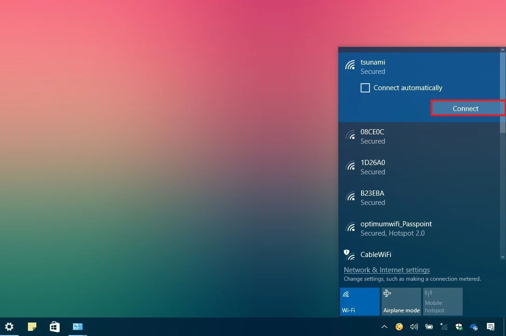
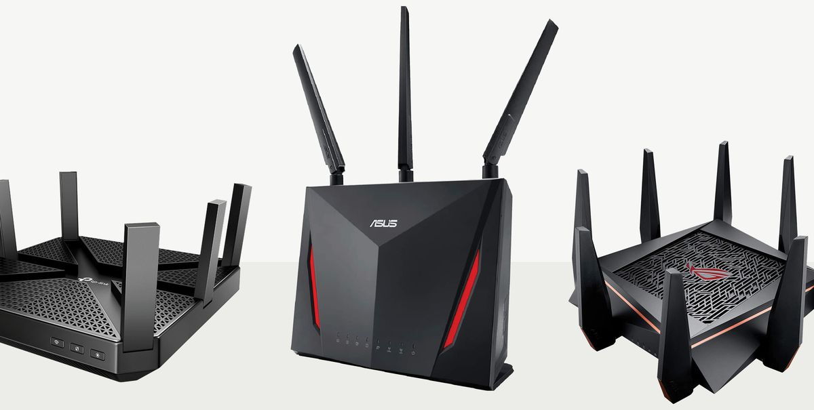

10 ways to fix your home Wi-Fi problems
When Wi-Fi slows down, so does our entire life. Our email and browsers stop loading. Our streaming movies freeze. Alexa stops responding. Our phones revert to data plans. Everything buffers at the same time, ruining the momentum of your routine.
There are plenty of reasons your Wi-Fi keeps slowing down: signal congestion, router location, firmware issues, hardware limitations or even the physical size of your home. Then again, it could just be your neighbors.
Wifi is what most people use, but it could also be a good target for people to hack into. Don’t make the simple mistake of leaving your wireless network open for others to see. If you’re concerned about sharing the contents of your PC or letting its wireless service be available to everyone, make sure you follow this quick step. Head into your network settings and make sure to choose the Private network setting if you don’t want to make your network or PC discoverable to other devices that may share the same network.
INTERFERENCE Reduce interference from other WiFi routers/modems Dense areas, such as apartments or condos mean more connection congestion. Make sure you're on your WiFi connection and not your neighbor's. Try changing the channel on your WiFi router/modem. If you have a newer device, try switching from the 2.4GHz band to the less commonly used 5Ghz (5Ghz has less range than 2.4Ghz, but if there's less interference, your range and speed may improve).
